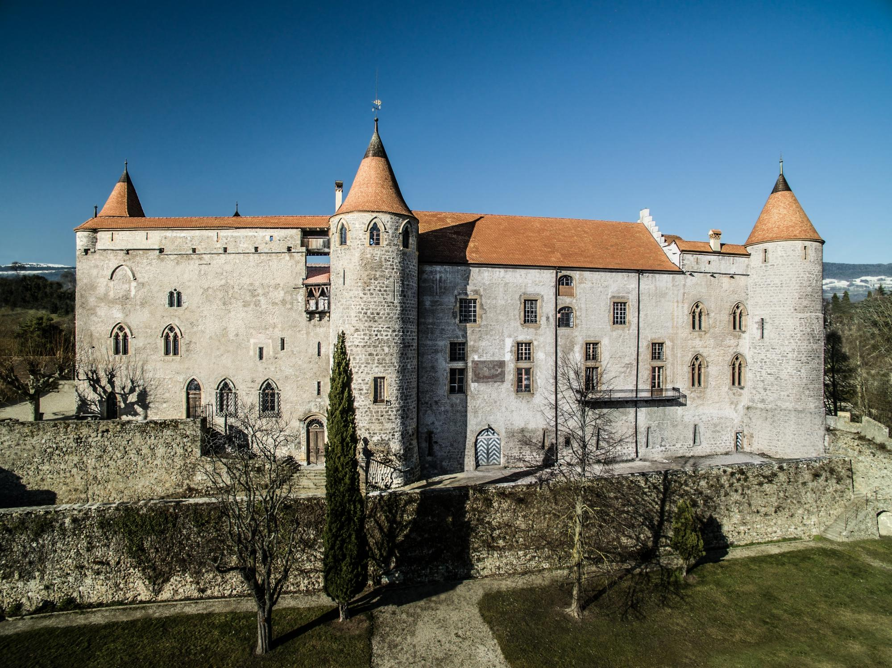
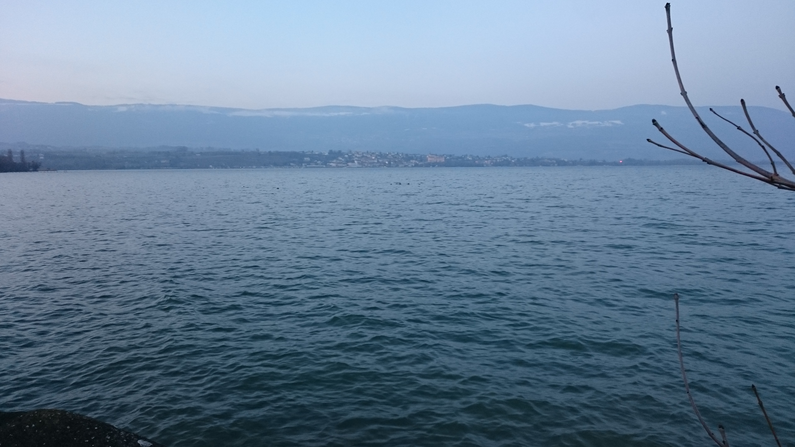

Grandson


Located above Lake Neuchâtel and a few minutes from Yverdon-les-Bains, the medieval town of Grandson surounds Switzerland’s second largest château.
check also these locations:
Yverdon-les-Bains
Yvonand
Grandson
Champ Pittet